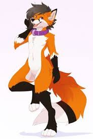

Kliknij
Furry – termin określający osobę, która interesuje się lub zajmuje się twórczością związaną z tzw. sztuką futrzastą, skupioną wokół antropomorficznych zwierząt lub mitycznych czy też fikcyjnych stworzeń.
